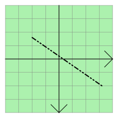

| Home · All Classes · Modules · QSS HELP · QSS 案例 · VER007 HOME |
该QGraphicsLineItem类提供了一个行项目，你可以添加到QGraphicsScene。More...
该QGraphicsLineItem类提供了一个行项目，你可以添加到QGraphicsScene。
要设置项目的路线，通过一个QLineF到QGraphicsLineItem的构造函数，或致电setLine（）函数。该line（ ）函数返回当前行。默认情况下，该线是黑色的宽度为0 ，但可以通过调用改变这个setPen（ ） 。

QGraphicsLineItem使用线路和钢笔的宽度，以提供合理的实施boundingRect（ ）shape（）和contains（ ） 。该paint（ ）函数绘制使用该项目的相关钢笔线。
该parent的说法，如果不是没有，原因self通过Qt的，而不是PyQt的拥有。
该scene的说法，如果不是没有，原因self通过Qt的，而不是PyQt的拥有。
构造一个QGraphicsLineItem。parent被传递给QGraphicsItem的构造。
See also QGraphicsScene.addItem（ ） 。
该parent的说法，如果不是没有，原因self通过Qt的，而不是PyQt的拥有。
该scene的说法，如果不是没有，原因self通过Qt的，而不是PyQt的拥有。
构造一个QGraphicsLineItem，使用line作为默认的行。parent被传递给QGraphicsItem的构造。
See also QGraphicsScene.addItem（ ） 。
该parent的说法，如果不是没有，原因self通过Qt的，而不是PyQt的拥有。
该scene的说法，如果不是没有，原因self通过Qt的，而不是PyQt的拥有。
构造一个QGraphicsLineItem，使用之间（线x1，y1）和（x2，y2）作为默认的行。parent被传递给QGraphicsItem的构造。
See also QGraphicsScene.addItem（ ） 。
从重新实现QGraphicsItem.boundingRect（ ） 。
从重新实现QGraphicsItem.contains（ ） 。
从重新实现QGraphicsItem.isObscuredBy（ ） 。
返回该项目的路线，或者如果没有行被设置一个空行。
See also setLine（ ） 。
从重新实现QGraphicsItem.opaqueArea（ ） 。
从重新实现QGraphicsItem.paint（ ） 。
返回该项目的钢笔或黑色固体0宽度的笔，如果没有笔已定。
See also setPen（ ） 。
设置项的行被定line。
See also line（ ） 。
这是一个重载函数。
设置项的路线是之间的界线（x1，y1）和（x2，y2） 。
这是一样的调用setLine(QLineF(x1, y1, x2, y2))。
设置项的笔pen。如果没有笔设置，线路将采用黑色固体0宽度的钢笔画。
See also pen（ ） 。
从重新实现QGraphicsItem.shape（ ） 。
从重新实现QGraphicsItem.type（ ） 。
| PyQt 4.10.3 for X11 | Copyright © Riverbank Computing Ltd and Nokia 2012 | Qt 4.8.5 |